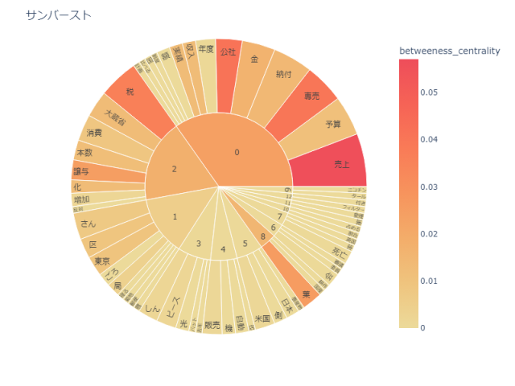
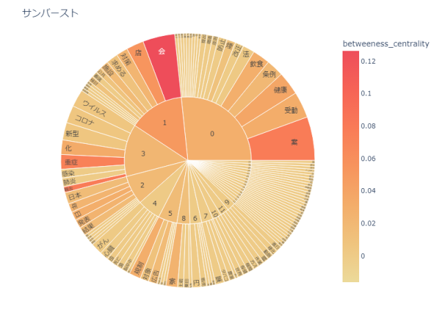
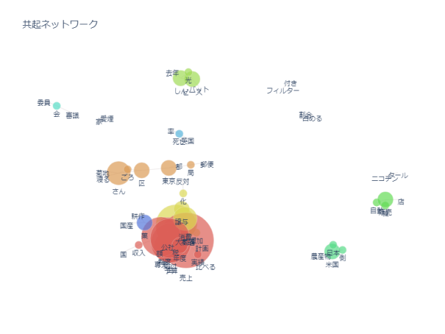
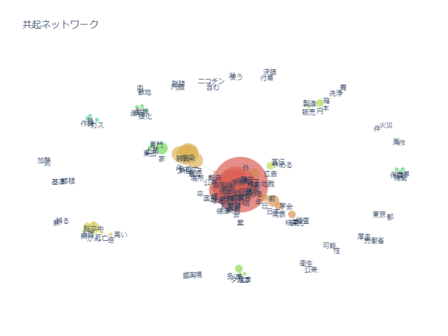
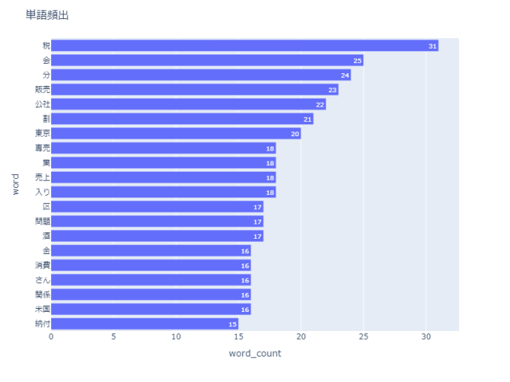
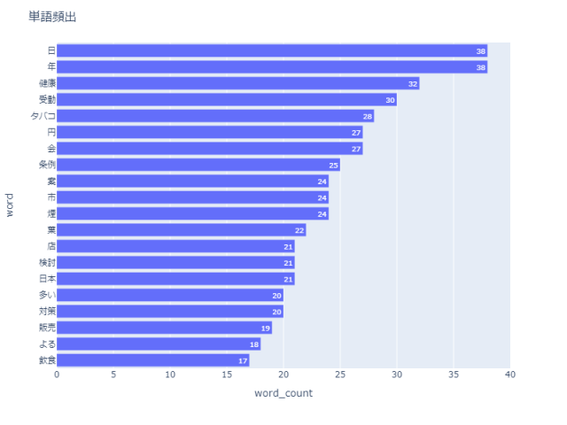

(左：縮刷版1948-1983 右：記事1985-2020)
     
過去のほうは「売上」や「専売公社」、「税」が特に目立っています。1949~1985年まで、日本専売公社がたばこ、塩、しょうのうの専売を行っていたこと、1989年に始まる消費税の課税が多くの人の注目を集めていたことがわかります。
また、現代のほうは「健康」「受動(喫煙)」などのワードが上位にあることから、「たばこは健康と関係がある」と考える人が多くなったと捉えられます。「コロナウイルス」の言葉があるのも現代の記事の特徴でしょう。
画像が見にくい場合は 出力したデータ集 をご確認ください。
TOPへ